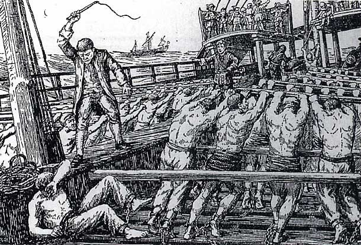

Мы уже обсуждали основные моменты процедур осуждения на галеры по религиозным мотивам. Тема хорошо освещена в литературе, рассмотрена со всех сторон. Отметим здесь лишь некоторые ее стороны, имея в виду возможное возвращение к ней в будущем.
Среди осужденных на галеры всегда была определенная часть протестантов. Но начиная с 1680 года многие сотни гугенотов (а после 1685 года – и того больше) были сосланы на галеры, так как публичное отправление ими религиозного культа было объявлено вне закона. Протестанты стали жертвами политики достижение религиозной однородности во Франции, которую проводил Людовик XIV. Многие властные органы, имеющие право осуждать на галеры, показывали свое горячее желание сотрудничать с провозглашенной политической линией короля.

Осуждение на галеры «пожизненно» («à perpétuité») было обычным наказанием за преступления против законов, относящихся к подавлению R.P.R. (официальное сокращение для французских протестантов: " Religion Prétendue Réformée," «Так называемая реформаторская религия»).
Аннулирование Нантского эдикта (1685) подстегнуло применение этого наказания. Было указано, среди прочего, что протестантские пасторы должны покинуть королевство в течение пятнадцати дней после публикации указа об отмене эдикта. Всем другим подданным короля, приверженцам R.P.R., а также недавно обращенным в католическую веру (называвшуюся Religion Catholique, Apostolique et Romaine) было категорически запрещено покидать королевство или помогать проведению любых служб или собраний, связаных с R.P.R. Законы, касающиеся этих и других подобных вещей, предусматривали отправку на галеры, а с более поздними поправками, обеспечивали прочную легитимную базу для большого числа осуждений на галеры. Большая часть этих осуждений, которая касалась протестантов, могла быть отнесена к одной из трех категорий: посещение протестантских религиозных служб, помощь пасторам или их укрывательство, а также попытка покинуть королевство или помощь другим лицам в этом деле.(W.Bamford "The Procurement of Oarsmen for French Galleys, 1660-1748," American Historical Review, LXV (1959), 31-48)
Доля протестантов в партиях осужденных, отправляемых на галеры, менялась в различные периоды. Турнье, один из историков, изучающих эту тему, приводит оценку, что еще в июне 1686 года на галерах находилось далеко за 600 протестантов, осужденных по причинам, связанным с религией,. (Tournier, Gaston. Les Galeres de France et les galeriens protestants des XVIIe etXVIIIe siecles. 3 vols. Cevennes: Musée du Désert, 1943-49. У меня есть бумажная копия этого труда.) Эта цифра возможно является весьма осторожной оценкой, учитывая, что в течение двух полных лет 1685-1686 гг. в Марсель прибыли 2378 новых осужденных «пригодных и непригодных для галер» , в то время как число осужденных всех категорий, прибывающих ежегодно в начале восьмидесятых (до отмены эдикта) оценивалось в среднем по 500 человек в год. (Bamford, "Procurement of Oarsmen," 36n) Увеличение почти на 100 процентов, которое мы видим, кажется малым, учитывая сильное влияние и эффективность, с которыми применялось законодательство 1685 г. об отмене эдикта. Вероятно, плохо учитывались или вовсе не учитывались те сотни сторонников R.P.R.,( многие из них были непригодны для работы на веслах, но имелись среди них и здоровые мужчины), которые после 1685 года были отправлены в Вест-Индию. В любом случае, поток осужденных-протестантов в годы, непосредственно следовавшие за отменой эдикта, продолжал увеличиваться. Так, сообщалось об отправке по меньшей мере 250 протестантов на галеры в 1689 г. Многие сотни приверженцев R.P.R. дополнительно были осуждены в последующие полвека, давая в общем итоге от 2000 до 4000 человек; Гастон Турнье, работающий с литературными источниками, архивами и частными бумагами во Франции и других местах, собрал и описал более 2000 случаев. Читать эти записи равнодушно невозможно.
Нет сомнения, что во многих местах Франции, также как и на самих галерах, с осужденными-протестантами обращались исключительно сурово. Едва ли это могло быть по-другому, учитывая интенсивность религиозных чувств и антагонизм того времени. Магистры, полицейские чиновники, охрана – все они полностью были под специальным наблюдением и давлением, которое не поощряло терпимость и подталкивало к жестокому обращению с приверженцами R.P.R.. Даже обычный учет положения или семейных связей или социальных отличий сводился к минимуму когда дело касалось протестантов. Протестант барон де Салга (de Salgas), который мог требовать права служить на галерах «в качестве благородного человека» - т.е. как солдат со шпагой на боку, без использования на веслах и содержания в цепях - содержался вместо этого в двойных кандалах и обходились с ним с исключительной суровостью. Когда его наконец-то освободили (после того, как за него перед Людовиком XIV вступился король Англии), Салга удерживался на галерах в течение по меньшей мере еще четырех месяцев после получения санкции на освобождение со стороны Людовика XIV, потому что «монсеньору кардиналу де Ноайе [в то время архиепископу Парижа] было угодно удерживать его», пока предпринимались попытки добиться отмены приказа о его освобождении.
Ни физическая слабость, ни преклонный возраст не влияли на отмену отправки на галеры в случаях, когда речь шла о приверженцах R.P.R. Конечно, лица физически слабые и имеющие физические недостатки на галерах не были нужны; старики и юнцы были почти полностью бесполезны на веслах. Но много таких лиц, которые оказались протестантами, было отправлено на галеры. Многие из них, должно быть, были включены в состав тех групп инвалидов, которые были отправлены в Вест-Индию в те годы. Другим последствием этого неразборчивого осуждения явилось то, что высокий процент старых, слабых и совсем еще юных людей, закованных в кандалы, умирали на маршруте этапа или вскоре после прибытия в Марсель. Но, по словам морского министра, это соответствовало желанию Людовика XIV, чтобы протестанты «страдали дольше, чем другие» на веслах, и чтобы «ни один человек, осужденных по религиозным мотивам, не мог никогда покинуть галеры.» (Г. Турнье) Конечно же имелось много исключений из этого правила, некоторые из которых были сделаны под влиянием иностранных правителей, которые добивались освобождения протестантов в различные периоды той эпохи. Но несомненно, что меры, направленные против протестантов в восьмидесятые годы, явились одними из самых эффективных способов рекрутирования французов на галеры.